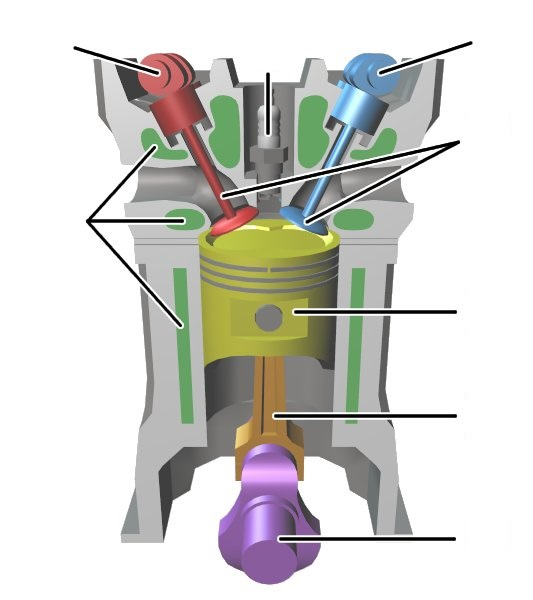

Physik · Ottomotor
Bauteile erkennen und erklären
Nutze das Leseblatt. Trage deine Antworten direkt ein oder drucke das Blatt leer aus.
Beschrifte die Abbildung.
Ordne den Buchstaben die passenden Bauteile zu. Ein Bauteiltyp kommt zweimal vor.

ABCDEFGHErkläre die Funktion wichtiger Bauteile.
Wähle sechs Bauteile aus Aufgabe 1. Schreibe jeweils in eigenen Worten, was das Bauteil im Motor bewirkt.
Abbildung: Wapcaplet/Shizhao · Wikimedia Commons · CC BY-SA 4.0. HTML-Buchstaben ergänzt.